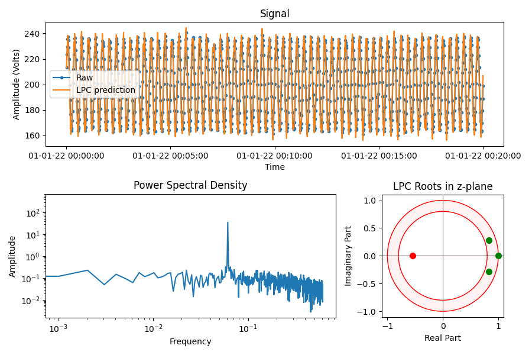
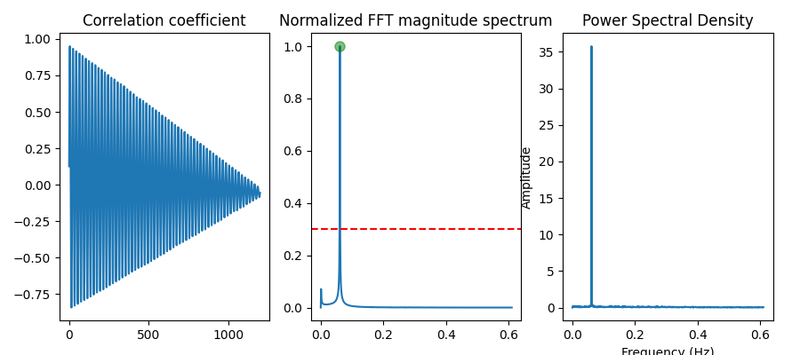
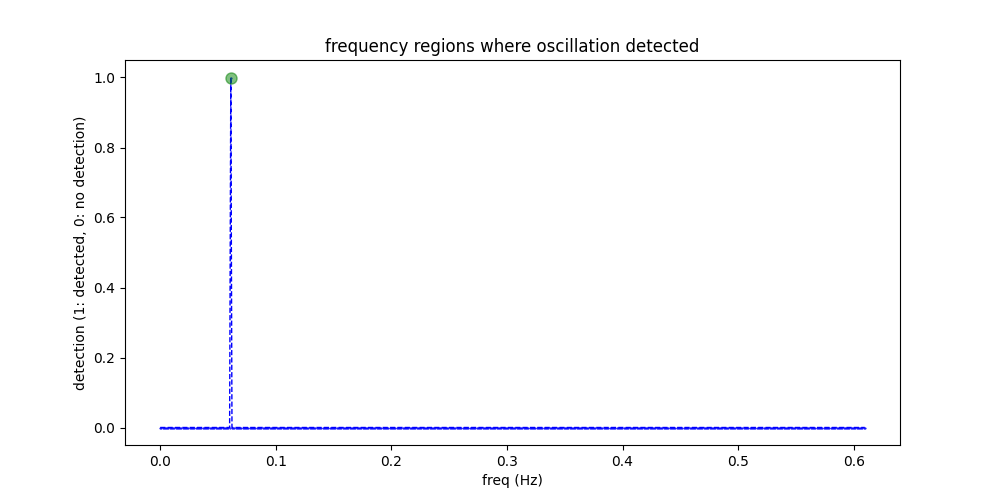

Note
Go to the end to download the full example code
Oscillation detection using linear predictive coding
Identifies if a signal contains one or more oscillatory components. Based on the paper by Sharma et. al. [#]_.
- 
- 
- 
/Users/vebjorngilberg/Documents/work/cognite/repos/indsl/indsl/detect/oscillation_detector.py:580: UserWarning: The figure layout has changed to tight
fig.tight_layout()
import os
import matplotlib.pyplot as plt
import numpy as np
import pandas as pd
from indsl.detect.oscillation_detector import helper_oscillation_detector, oscillation_detector
# brownian noise wave signal
base_path = "" if __name__ == "__main__" else os.path.dirname(__file__)
data = pd.read_csv(os.path.join(base_path, "../../datasets/data/brownian_noise_wave.csv"), index_col=0).squeeze(
"columns"
)
# convert str to datetime
data.index = pd.to_datetime(data.index)
# call oscillation detector function
results = oscillation_detector(data)
# output dictionary
dict_output = helper_oscillation_detector(data)
# plot the results
fig, ax = plt.subplots(1, 1, figsize=[10, 5])
ax.plot(
results.index,
results.values,
color="blue",
linestyle="dashed",
linewidth=1,
markersize=1,
marker=".",
)
ax.set_xlabel("freq (Hz)")
ax.set_ylabel("detection (1: detected, 0: no detection)")
ax.set_title("frequency regions where oscillation detected")
ax.plot(results.index[np.where(results.values == 1)], 1, "go", markersize=8, alpha=0.5)
plt.show()
Total running time of the script: (0 minutes 0.941 seconds)